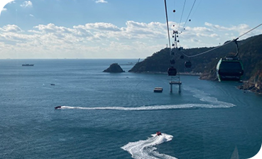

다대포해수욕장
다대포해수욕장의 희고 고운 모래는 오랜 풍화작용 덕에 매우 부드러운 것이 특징이다. 모래사장을 거 닐 때 발가락 사이로 흘러내리는 모래알의 색다른 감 촉이 상쾌한 기분을 만들어주는 것도 이 때문이다. 또한, 다대포해수욕장은 수심이 얕고 수온이 차지 않 아 아이들이 놀기에 적격이다. 백사장 여기 저기 주차 된 장난감 포크레인과 트럭이 알록달록 색을 발하는 모습이 귀엽다. 최근에는 패들보드나카이트보딩 등 해양스포츠를 즐기는 사람들로 사시사철 활기가 넘치 는 곳이다.
송도해상케이블카
암남공원에서 송림공원까지 운행되는 송도해상케이블 카는 크리스탈캐빈을 타고 송도해수욕장 앞바다 위를 가로지르며 발아래 펼쳐지는 아찔한 바다와 기암절벽 을 마음껏 누릴 수 있는 관광코스이다. 송도해수욕장은 1913년에 개장한 우리나라 1호 해수 욕장으로 개장 100주년을 넘어선 역사를 갖고 있다. 깨끗한 모래사장과 맑은 수질, 구름산책로, 해상케이블 카를 가진 송도해수욕장은 이제 연간 500만이 넘는 관 광객이 찾는 명소가 되었다.
- 

남항대교
부산광역시 서구 암남동과 영도구 영선동을 연결하는 해상 (海上) 다리이다. 부산 남항에서 영도로 연결되는 다리라 하여 붙여진 이름이다. ‘신세기를 열어가는 관문’을 주제로 한 경관조명은 남항의 밤바다를 아름답게 수놓고 있으며, 내항 쪽에는 폭 3m의 산책로가 설치돼 시민들이 자유롭게 왕복하면서 남항일원 의 풍광과 부산의 해안을 한 눈에 볼 수 있다. 특히 남항 대 교에서는 용두산공원, 자갈치시장, 도개교인 영도대교, 태 종대, 송도해수욕장 해안 절경 등이 한눈에 들어온다.
부산항대교
부산광역시 영도구 청학동과 남구 감만동을 연결하는 다리 이다.부산항대교에서 보면 부산항의 관문 오륙도, 태종대, 신선대, 용두산공원 등이 한눈에 바라다 보인다. 부산항대 교는 부산항 일대의 풍경을 바꾸어 놓은 ‘부산항을 상징하 는 대표 건축물’로 부산시민은 물론 국내외 관광객에게 사 랑을 받고 있다. 부산항대교의 건설로 거제도와 부산을 연 결하는 거가대교와 부산광역시 남구 광안대교를 연결하며 부산 해안선을 따라 연결하는 7개의 다리를 '브리지 오브 부산(Bridge of Busan)'이라고 불린다.

광안대교
부산광역시 수영구 남천동과 해운대구 우동의 센텀시티를 잇는 다리이다. 시간대별, 요일별, 계절별로 구분해 10만 가지 이상의 다양한 색상을 낼 수 있는 경관 조명시설을 갖추었다. 국내 최초의 2층 해상 교량으로, 현수교 역시 국내 최대 규 모이다. 또 국내 최대 규모의 3경간 연속 2층 트러스교를 현수교 양측에 360m씩 건설함으로써 광안해수욕장의 야 경과 함께 부산광역시의 명소로 자리잡았다.
해운대
부산하면 바다! 부산바다하면 해운대! 여름이면 천 만 명이 넘는 피서객들이 해운대해수욕장을 찾 는다. 1.5km 길이의 백사장을 중심으로 오락시설과 부대시 설이 잘 갖춰져 있어, 국적과 나이를 불문하고 수많은 이들을 만족시켜주고 있다. 넓은 해변과 바로 근접한 대중교통으로 인해 많은관광객들의 발길이 닿는 부산의 대표 관광지이다. 해운대 해수욕장의 풍경은 밤이면 더욱 매력적으로 변모한다.

송정해수욕장
해운대를 지나 달맞이길 따라 돌아 내려오면 넓고 길게 펼 쳐진 백사장이 보인다. 그곳이 바로 서퍼들이 사랑하는 바 다, 송정해수욕장이다.수심이 낮고 경사가 완만하여 가족단 위 피서지로 인기가 높다. 면적 10만 km2. 백사장길이 2 km. 너비 50 m. 부산역에 서 약 20 km, 해운대(海雲臺)에서 약 8 km 북쪽에 있으며, 맑고 깨끗한 물과 고요한 해수욕장의 분위기로 알려져 있다. 수심이 얕고 경사가 완만하며 파도도 거칠지 않아 수영 초보 자도 수영을 즐기기에 적합하다